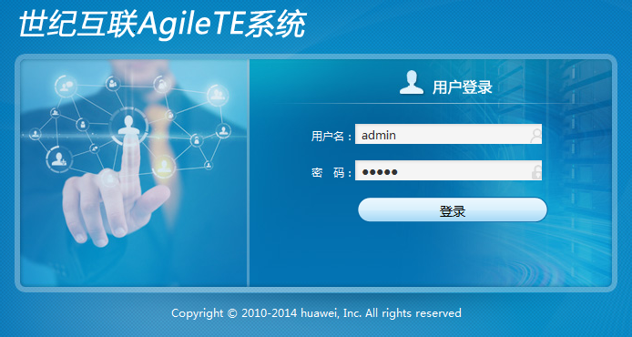

介绍Agile TE应用程序的登录操作。
操作步骤
- 通过浏览器，进入Aglie TE登陆页面。
- IE浏览器：在Aglie TE程序文件夹中点击“OpenFgileTE”，系统会自动启动IE浏览器，并进入登陆界面。
- Firefox浏览器：在地址栏输入“https://X.X.X.X:8088/AgileSys/view/main/index.jsp”，即可访问登陆界面。
- Chrome浏览器：在地址栏输入“https://X.X.X.X:8088/AgileSys/view/main/index.jsp”，即可访问登陆界面。
 说明： 请将X.X.X.X替换为实际的服务器IP地址。
说明： 请将X.X.X.X替换为实际的服务器IP地址。 - 输入用户名和密码
用户名为“amdin”。首次登录的初始密码为“admin”。
 注意： 初始密码只是软件出厂时的预设值，建议您将初始密码修改为自定义的密码。
注意： 初始密码只是软件出厂时的预设值，建议您将初始密码修改为自定义的密码。 - 点击“登录”按钮，进入Agile TE服务器列表。